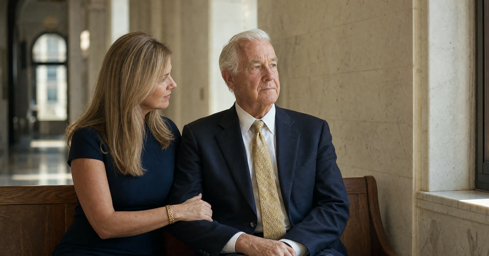

Gene's move to Palm Coast
Gene is 79. He is a composite of families I have worked with, not an actual client, but his situation is a common one. He has been under a guardianship in Ohio for a few years after a stroke left him unable to manage his finances or medical decisions on his own. His son Rick lives in Palm Coast and wants his father nearby, in an assisted living community five minutes from his house. The family's first question is simple: once Gene is a Florida resident, does the guardianship just follow him, or does everyone have to go back to court?
Florida guardianship is a court process under Chapter 744, Florida Statutes, used when a judge finds a person incapacitated and less restrictive tools will not work. The relevant wrinkle for Gene's family is jurisdiction: which state's court has authority once he has moved.
Have this exact situation? Talk it through with a Florida attorney — the 20-minute consultation is free.
Book Free Consult or call (888) 388-8445Why Florida doesn't just accept Ohio's order
Many states have adopted a uniform law designed to let a guardianship travel smoothly from one state to another. Florida has taken a different approach. Instead of a simple registration process, Florida has its own jurisdiction statute, found in Part IX of Chapter 744, sometimes called the Florida Guardianship Jurisdiction Act. It tells Florida courts how to decide whether they have authority over a ward who has moved here, but it does not create a one-step registration of the Ohio order.
That matters practically. A Florida hospital, bank, or assisted living facility will generally not accept an Ohio guardianship order as authority to act in Florida. They will ask for a Florida order naming the guardian. So even though Gene already has a guardian under Ohio law, Rick cannot simply hand Gene's care team the Ohio paperwork and expect it to work the same way here.
The transfer walkthrough: how it actually proceeds
Here is generally how a case like Gene's moves through the two court systems. The exact sequence and terminology can vary by county and by how the sending state's court prefers to handle it, so this is the general shape rather than a guaranteed script.
- Step one, action in the home state. Ohio is Gene's home state, meaning the state where the guardianship was established and where the court has been supervising it. Rick's Ohio counsel typically petitions the Ohio court to transfer the case, or at minimum to confirm the guardianship and provide certified, authenticated copies of the guardianship order, letters of guardianship, and the most recent inventory and reports.
- Step two, a provisional order. Depending on the posture of the case, the Ohio court may issue a provisional order acknowledging the planned move and the guardian's continuing authority pending the Florida proceeding, or simply close its file once satisfied Florida will take it up.
- Step three, filing in Florida. Once Gene is physically in Florida, Rick's Florida attorney files in the circuit court of the county where Gene now resides, Flagler County for Palm Coast. Florida statute requires that when a ward's residence changes to Florida, the guardian file the authenticated out-of-state order with the clerk of court within a set window after the move. That filing puts the Florida court on notice, but it is a notice step, not a full transfer by itself.
- Step four, the Florida court's review. Because Florida has not adopted the uniform registration model, the family generally must also file a new petition asking the Florida court to determine incapacity and appoint a guardian, or in some circumstances to recognize the existing determination and appoint based on the Ohio record. The court will look at Gene's connection to Florida, review the Ohio documentation, and may still require a three-member examining committee. Gene, as the alleged incapacitated person, retains the right to counsel and the right to a hearing in Florida just as he would if this were an entirely new case.
- Step five, final orders. If the Florida court is satisfied, it issues its own letters of guardianship, and Rick (or a Florida-based co-guardian, if needed) becomes the guardian of record under Florida law going forward, subject to Florida's initial plan, inventory, and annual reporting requirements.
Families often ask how long this takes. There is no fixed statutory timeline for the whole sequence, and it depends on court dockets in both states, how complete the Ohio records are, and whether a new examining committee evaluation is needed. Families should expect the Florida side alone to take a matter of months, not days, and should plan Gene's move and his Florida care arrangements with that in mind.
Can Rick serve as guardian if he's Gene's son in Florida?
Yes, adult children are squarely within the relationship categories Florida allows. Florida generally requires a guardian to be a Florida resident, but it makes an exception for certain relatives of the ward, including children, so Rick's Florida residency is not a barrier and his relationship to Gene actually helps here.
If Rick had not already been serving as Gene's guardian in Ohio, and a new guardian needed to be appointed in Florida, a family member serving as guardian for the first time would also need to complete Florida's court-approved guardian training course before appointment, apart from any narrow statutory exceptions. If the family ever preferred a professional guardian instead of a relative, that person would need to be registered with Florida's Office of Public and Professional Guardians.
What if Gene only needs help with money, not everything?
This is a good moment to revisit whether the original Ohio guardianship was plenary (covering essentially all decision-making) or limited to specific areas. Florida law also allows guardianship of the person, of the property, or both, and it requires the court to consider whether a less restrictive alternative, such as a durable power of attorney, a health care surrogate designation, a trust, or a previously signed pre-need guardian designation, could meet Gene's needs instead of full guardianship.
If Gene also owns real estate or a bank account in Florida but is not yet living here permanently, that is a different and narrower situation: Florida courts can sometimes establish a property-only guardianship limited to the in-state assets without taking over the whole case. That is not Gene's situation once he actually relocates to Palm Coast, but it is a common variation for families with a parent who splits time between two states.
A note on Medicaid timing
Families moving an aging parent to Florida for long-term care often need Medicaid to help pay for it, and Medicaid has its own state residency rules separate from the guardianship court process. The guardianship transfer and the Medicaid application are not the same clock, and one does not automatically resolve the other. If Gene will need Florida Medicaid benefits for his care, that residency and application timing should be reviewed with an elder law attorney alongside the guardianship transfer, not after it.
Frequently Asked Questions
The Truestead Takeaway
For a family like Rick's, the honest answer is that Gene's guardianship does not simply carry over when he moves to Palm Coast. Florida requires its own court filing, its own review, and in most cases its own order before Rick's authority as guardian is recognized here, even though Ohio's records make that Florida process faster and more straightforward than starting completely from zero. The sensible next step is to loop in a Florida elder law attorney before the moving truck arrives, so the Florida filing, the guardian training requirement, and any Medicaid residency timing are all lined up rather than addressed after the fact. Every family's facts differ, and this article is general information, not a substitute for review of your specific situation.
Have a child turning 18? Get the free 18 & Protected packet — the legal documents every Florida 18-year-old needs.
Get the Free PacketTalk to a Florida Attorney
Every family’s situation is different. Schedule a consultation with Arthur Simpson, Esq. to review your plan and your options under Florida law.
Schedule a Consultation →This article is for general informational purposes only and does not constitute legal advice, nor does reading it create an attorney-client relationship. Florida estate, elder, probate, and real estate law are fact-specific and change over time. Consult a licensed Florida attorney about your individual circumstances. Arthur Simpson, Esq. is licensed to practice law in the State of Florida. Attorney advertising.
Talk to a Florida Attorney — Free 20-Minute Consultation
Pick a time below. No obligation, no pressure — just answers.